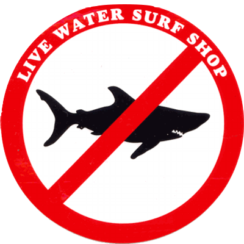

Live Water Surf Shop

Live Water Surf Shop is one of the oldest surf shops in Northern California. Proudly serving the surf community since 1978. Nestled in the historical 'Avilla's Barn' for over 30 years. Live Water was founded by Kirby Ferris whom also created the infamous 'No Shark' logo. Kirby sold the store in the late 90's to Milly, Kirby's ex wife... years late it was resold to Brenna and Pete Gubbins who have been running the shop since 2006. Brenna and Pete opened the 2nd Live Water, in Fairfax, in 2013.
Back in 1981 Stinson Beach had been closed off for several days at a time due to Great White shark sightings for weeks. Kirby and other locals were banned from surfing their beach and fell into a 'surf drought'... because of this the 'No Shark' insignia was born! Referring to no sharks in the water so they could surf the beach!